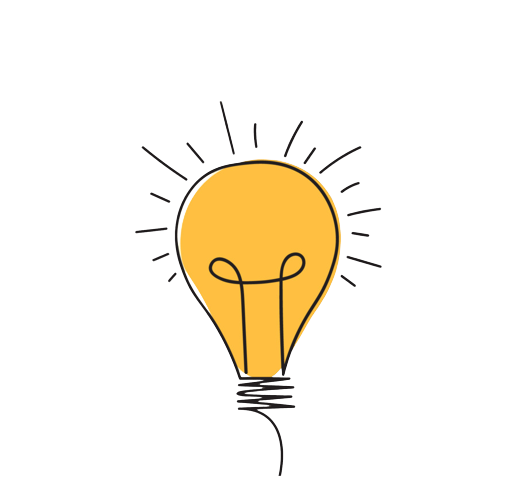

Lucas Barros
Computer Technical and Software Developer
ABOUT ME

|
I am a computational engineer student at the Federal University of Paraiba (UFPB). My studies and works are focused on the internet of things (IoT) and development, I love entrepreneurship and innovation.
|
MAIN PROJECTS


|
RapidinhoApplication to request motorcycles race on Palmeira dos Índios town. This is an application which was developed whith Flutter. I wasn't the project's owner, but I was the CTO of the startup. It was very important and mean an advance on my hometown, which until don't had a urban mobilty application to people. This project is today available on Play Store. |
GymbroGymbro is an application for bodybuilders. It was developed with Flutter and with this is possible to have new partnes to workout in gym, share experiences and knowledge. It was developing as a college project and today have users by all the world, include every Brazil's regions and others countries, how Italy and France. Is available to download on Play Store. |
|
MY JOBS

MY ABILITIES

|
IoTI had close contact being part of a research project at the university, from that moment on my interest in the field was piqued. |

|
RoboticsSince Highschool my contact with hardware kept growing. Arduino was the introduction. |

|
Mobile DevelopmentMobile programming became something extremely interesting to me and it keeps firming as such. |

|
Full StackWorking in every step of the development, from modeling to design and doing all the "behind the scenes" is something I like doing, and get proficiency from my projects. |
SPARE TIME
Physical ActivitiesPracticing physical activities is something new to me, but without a doubt, it became an important part of my daily activities. Whether it is running, going to the gym, or exercising at home, they are activities that improve my mental and physical health, as well as making my day way more productive. |

|
WatchingNo one resists a good movie or series on the weekends when it is possible. Watching is one of my favorite activities in moments of relaxing and unwinding. |

|
ProducingSometimes, even in my spare time, I feel productive and feel like doing things I like, including programming, solving problems, thinking about business strategies for my ideas, and such things. |

|